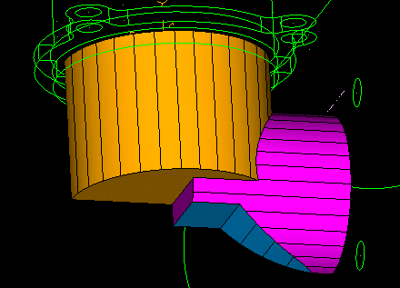
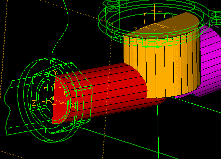

| Next Page | Previous Page | First Page |
SIP on the XZ plane of the top coordinate system.
"Create the next feature by using the next datum."


As before create an Arc centered on a Focused
point from the coordinate system.

Add the line arc end to arc end.

Constrain the line to pass through the are center.


Modify the radius to 32mm

Extrude, Flip the direction and protrude 45mm
"Notice how you can preview the
direction and distance of the extrusion.
Watch for the previews, and
graphical feedback thoughout the demo."

Flip to the XY plane and pan to the side
of the work. You will create a seperate new part.
Create a vertical line.
Create the Arc from the line center.
Modify the radius to 18mm
"Creating a seperate part and then add this to our design."

Extrude, Flip the direction and protrude 110mm

Fillet the rear edge R13mm
"Notice how the fillet radius is previewed."


Align the end face of the new part to the XY plane of the coordinate system shown.
Align, pick end face of part, pick XY plane of coordinate system, Surface operations, Flip Surfaces, Coincident Points, center point of end face (CP1), coordinate system origin, <Done>
"Need to put the new features
in the correct design location.
Aligning faces and location
on faces."